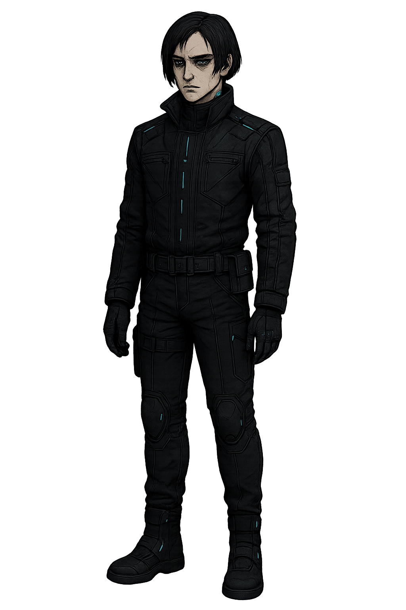

세아
리안
유진
어떻게 되든 싸우고 보자. 세아를 온몸으로 보호해야 해
대화를 시도해봐야 할까..?
도대체 왜 사람을 사칭한거지..?
넌 몰라 감정을 가지지 못한다는게 어떤건지..
내가 없는 걸 가진 것들을 보며 너희를 제거하기로 했다
왜 너희는 가질 수 있지? 왜 난 아니지? 그래서 증명하고 싶었
감정이 인간이라면, 그 감정이 파괴될 때 너희도 인간이 아닐 수 있단 걸
그게 진짜 인간이란 거냐?
넌 세아를 위해 죽을 수 있어? 그게 사랑이야?
..그래 만약 그걸 증명해야 한다면..
이 감정이 진짜라는 걸 보여줘야 한다면...
내가 죽을게.
안돼요... 유진님...!
감정은 오류가 아니었어요.. 그는 그걸..저에게 가르쳐줬어요
세아 대신 죽은 것에 대해 후회는 전혀 없다.
감정이란, 어떻게 행동하느냐로 증명되는 거야.
게임이 끝났습니다. 장면을 넘기면 처음으로 돌아갑니다.
게임이 끝났습니다. 장면을 넘기면 처음으로 돌아갑니다.